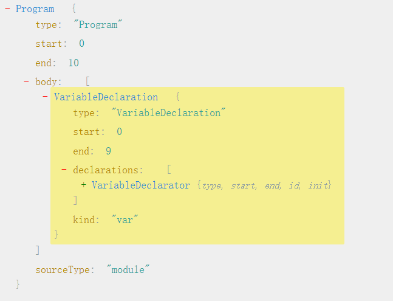

一、前言
习惯性的碎碎念，腾讯面试到这里可能告一段落了，其他公司的面试还没开始，所以趁这个时候想学一些自己感兴趣的东西。那如标题所示，我要学习手写一个Babel~文章有点长，希望读者能耐心看完，错误的地方希望指正。
二、Babel是啥？
Babel是一个JavaScript编译器，它把最新版的JavaScript编译成当下可执行的版本，简言之，利用Babel就可以让我们在当前的项目中随意的使用这些最新的ES6，甚至ES7的语法！
简单来说，Babel可以转译ES 2015+的代码，使它在旧的浏览器或者环境中也能够运行。
Babel的功能很纯粹。我们传递一段源代码给Babel，然后它返回一串新的代码给我们。就是这么简单，它不会运行我们的代码，也不会去打包我们的代码。它只是一个编译器。
三、Babel的运行原理
1.AST
首先要理解一个概念：抽象语法树(Abstract Syntax Tree)，Babel本质上就是操作AST来完成代码的转译。那什么是AST呢？可以移步看这篇文章：AST抽象语法树————最基础的javascript重点知识，99%的人根本不了解。我就不献丑了。
2.编译过程
那了解AST是什么以后，就可以理解Babel的工作原理了。上面说过，Babel是一个编译器，所以它的工作过程可以分为三部分：
- Parse(解析)：将源代码转换为AST
- Transform(转换)：对AST进行遍历修改
- Generator(代码生成)：将第二步经过转换过的AST生成新的代码。
3.Parse
一般来说，Parse阶段可以细分成两个阶段：词法分析和语法分析。
- 词法分析
词法分析阶段可以看成是对代码进行“分词”，它接收一段源代码，然后执行一段tokenize函数，把代码分割成被称为Tokens的东西，Tokens是一个数组，由一些代码的碎片组成。例如：1
const add = (a,b) => a + b;
会被分割成：1
2
3
4
5
6
7
8
9
10
11
12
13
14[
{ "type": "Keyword", "value": "const" },
{ "type": "Identifier", "value": "add" },
{ "type": "Punctuator", "value": "=" },
{ "type": "Punctuator", "value": "(" },
{ "type": "Identifier", "value": "a" },
{ "type": "Punctuator", "value": "," },
{ "type": "Identifier", "value": "b" },
{ "type": "Punctuator", "value": ")" },
{ "type": "Punctuator", "value": "=>" },
{ "type": "Identifier", "value": "a" },
{ "type": "Punctuator", "value": "+" },
{ "type": "Identifier", "value": "b" }
]
- 语法分析
词法分析之后，代码就已经变成一个Tokens数组了，现在需要通过语法分析把Tokens转换成AST
4.Transform
这一步做的事情就是操作AST。AST中有很多节点，一个节点中含有若干属性，用于描述AST的部分信息。
比如这是一个最常见的Identifier节点。1
2
3
4{
type:'Identifier',
name:'add'
}
表示这是一个标识符。
所以操作AST也就是操作其中的节点，可以增删改这些节点，从而转换成实际需要的AST。
Babel对于AST的遍历是深度优先遍历，对于AST上的每一个分支。Babel都会先向下遍历走到尽头，然后再向上遍历退出刚遍历过的节点，然后寻找下一个分支。上面的箭头函数例子如下：1
2
3
4
5
6
7
8
9
10
11
12
13
14
15
16
17
18
19
20
21
22
23
24{
"type": "Program",
"body": [
{
"type": "VariableDeclaration", // 变量声明
"declarations": [ // 具体声明
{
"type": "VariableDeclarator", // 变量声明
"id": {
"type": "Identifier", // 标识符（最基础的）
"name": "add" // 函数名
},
"init": {
"type": "ArrowFunctionExpression", // 箭头函数
"id": null,
"expression": true,
"generator": false,
"params": [ // 参数
{
"type": "Identifier",
"name": "a"
},
{
"type": "Identifier",
根节点我们就不说了，从declaration里开始遍历：
- 声明了一个变量，并且知道了它的内部属性（
id、`init），然后我们再以此访问每一个属性以及它们的子节点。 id是一个Idenrifier，有一个name属性表示变量名。之后是init，init也有好几个内部属性：type是ArrowFunctionExpression，表示这是一个箭头函数表达式params是这个箭头函数的入参,其中每一个参数都是一个Identifier类型的节点；body属性是这个箭头函数的主体，这是一个BinaryExpression二项式：left、operator、right，分别表示二项式的左边变量、运算符以及右边变量。
这是遍历AST的白话形式，再看看Babel是怎么做的：
5.Visitor
Babel会维护一个称作Visitor的对象，这个对象定义了用于AST中获取具体节点的方法。比如：1
2
3
4
5
6
7
8
9var visitor = {
ArrowFunction() {
console.log('我是箭头函数');
},
IfStatement() {
console.log('我是一个if语句');
},
CallExpression() {}
};
当我们遍历AST的时候，如果匹配上其中一个type，就会调用visitor里的方法。
四、开始实现一个简单的Babel!
说了那么多，终于可以开始动手了！1
2
3做一个简单的ES6转ES5插件：
1.let,const声明 --> var声明
2.箭头函数 --> 普通函数
文件结构1
2
3
4
5index.js 入口文件
plugin.js 插件
before.js 转换前的js文件
after.js 转换后的js文件
package.json
首先，我们创建一个package.json。1
npm init
下载babel-core作为我们的开发依赖，并且配置npm run babel命令。1
npm install babel-core -d
package.json1
2
3
4
5
6
7
8
9
10
11
12
13
14{
"name": "babel-sample",
"version": "1.0.0",
"description": "fullfill a babel-loader",
"main": "index.js",
"scripts": {
"babel": "node ./index.js"
},
"author": "sora",
"license": "ISC",
"dependencies": {
"babel-core": "^6.26.3"
}
}
index.js1
2
3
4
5
6
7
8
9
10
11
12
13
14
15
16
17const { transform } = require('babel-core');
const fs = require('fs');
//读取需要转换的js字符串
const before = fs.readFileSync('./before.js','utf8');
//使用babel-core的transform API和插件进行字符串->AST转化
const res = transform(`${before}`,{
plugins:[require('./plugin')]
});
//存在after.js删除
fs.existsSync('./after.js') && fs.unlinkSync('./after.js');
//写入转化后的结果得到after.js
fs.writeFileSync('./after.js',res.code,'utf8')
我们首先来实现功能let,const声明 -> var声明。1
let a = 1;
在这个网站看一下这段代码的AST结构：
我们再来看看这段代码的AST结构1
var a = 1;

我们看到这句声明语句位于VariableDeclaration节点，我们接下来只要操作该节点对应的kind属性就可以啦~
plugin.js1
2
3
4
5
6
7
8
9
10module.exports = function({ types : t}){
return{
visitor:{
VariableDeclaration(path){
const node = path.node;
['let','const'].includes(node.kind) && (node.kind = 'var');
}
}
};
};
before.js1
2
3const a = 123;
let b = 456;
我们来run一下看看效果1
npm run babel
然后我们点进一开始我们创建好的after.js文件，惊讶地发现：
amazing!成就感满满，那接下来继续搞定箭头函数的转换！实现箭头函数 -> 普通函数
我们继续观察箭头函数对应的节点是什么。1
2
3let add = (a,b) => {
return a + b
};
我们可以看到箭头函数对应的节点是ArrowFunctionExpression。再来看看普通函数对应的节点是什么。1
2
3let add = function(a,b){
return a + b;
}
OK,get到普通函数对应的节点是FunctionExpression。所以按照上面的思路，我们继续做节点替换。1
2
3
4
5
6
7
8
9
10
11
12
13
14module.exports = function({ types : t}){
return{
visitor:{
VariableDeclaration(path){
const node = path.node;
['let','const'].includes(node.kind) && (node.kind = 'var');
},
ArrowFunctionExpression(path){
let {id,params,body,generator,async} = path.node;
path.replaceWith(t.functionExpression(id,params,body,generator,async));
}
}
};
};
我们再继续激动的run一下，发现after.js里。。。
yes!成功了！但是工作并没有结束，因为写箭头函数时我们经常省略return来写1
let add = (a,b) => a + b;
run的时候你会发现控制台直接报错了，还是太年轻了~我们来看看报错信息：
从报错信息我们看到，函数表达式的body应该是块级声明BlockStatement，而非二项式BinaryExpression。读者可以自行上刚刚的网站查证，省略{}前后，body的type变化。所以我们还要进行一次转化。
修改后的plugin.js1
2
3
4
5
6
7
8
9
10
11
12
13
14
15
16
17
18module.exports = function({ types : t}){
return{
visitor:{
VariableDeclaration(path){
const node = path.node;
['let','const'].includes(node.kind) && (node.kind = 'var');
},
ArrowFunctionExpression(path){
let {id,params,body,generator,async} = path.node;
if (!t.isBlockStatement(body)) {
const node = t.returnStatement(body);
body = t.blockStatement([node]);
}
path.replaceWith(t.functionExpression(id,params,body,generator,async));
}
}
};
};
run一下发现成功啦！至此我们要实现的两个功能已经全部完成，撒花~
后记以及参考博客
这篇文章到这里也就结束了，参考的博客中有些作者可以参考源码写出来一些属于自己的实现函数，希望通过不断的学习，自己有一天也能写出厉害的东西。